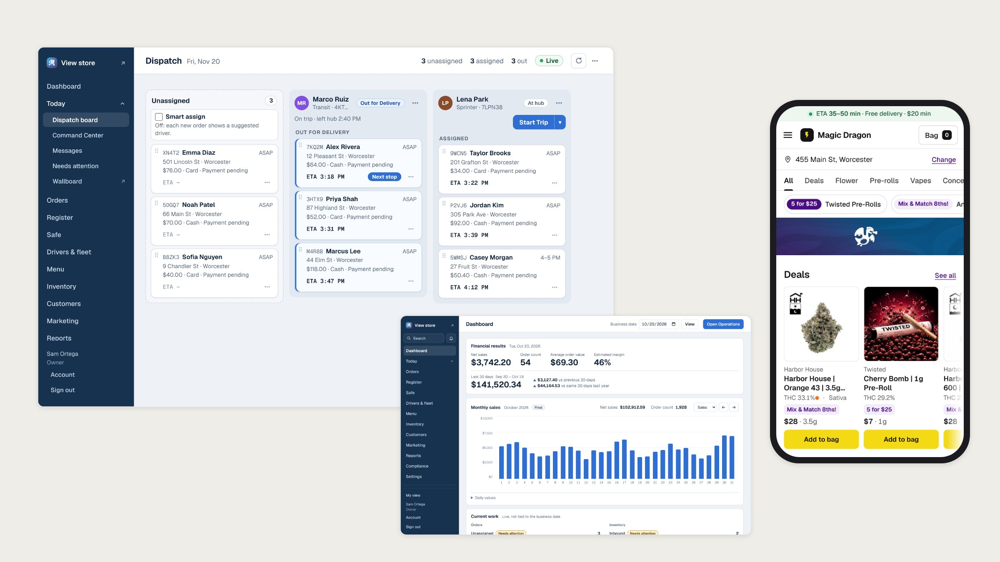
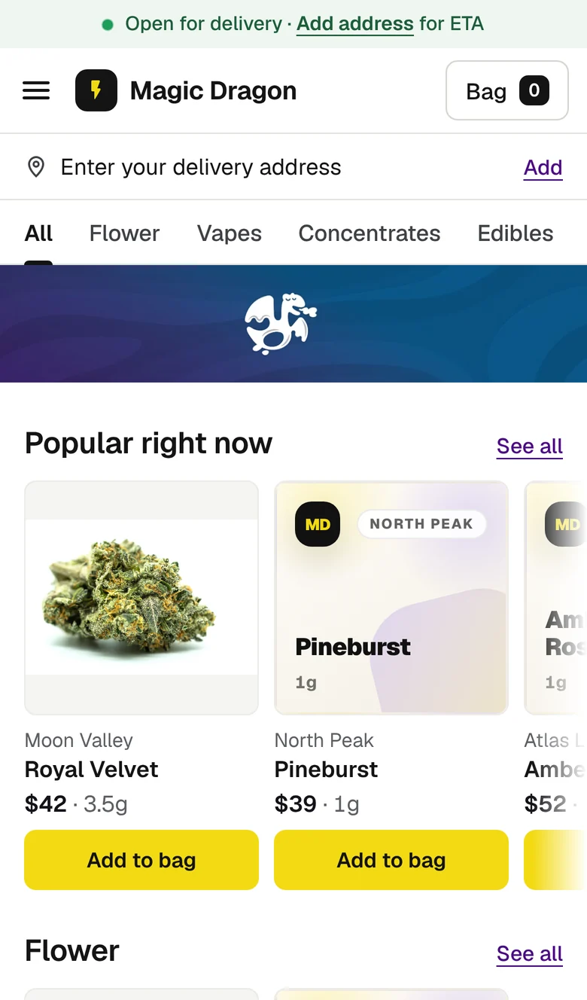
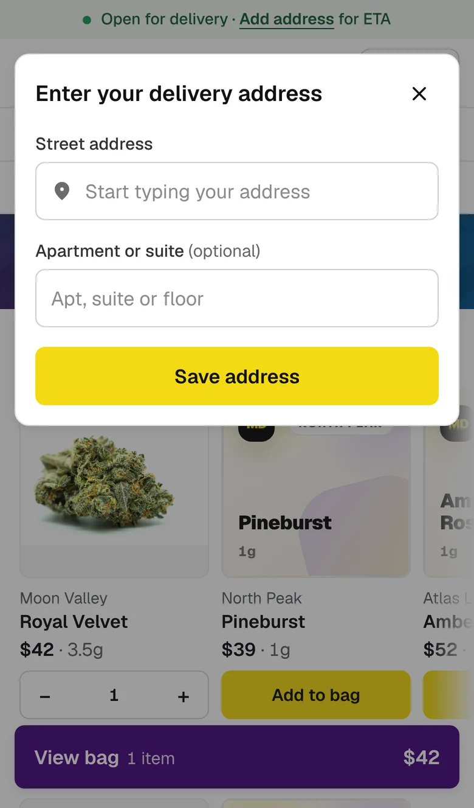
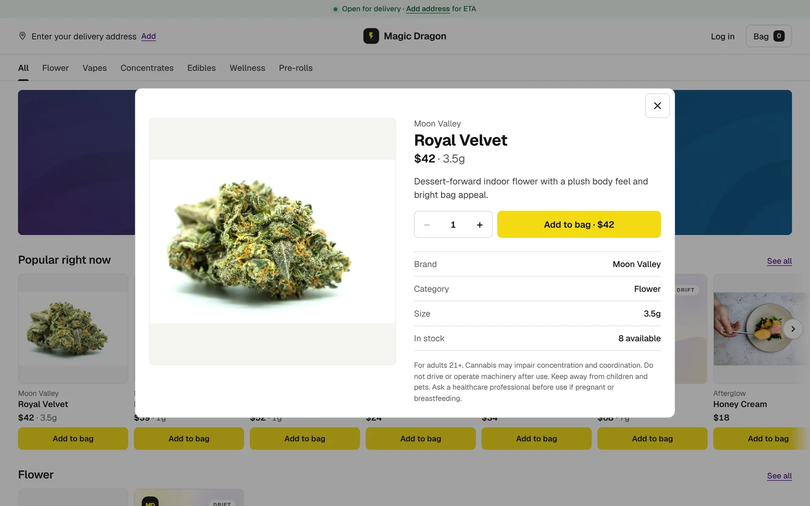
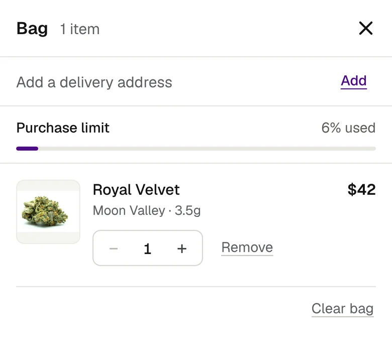
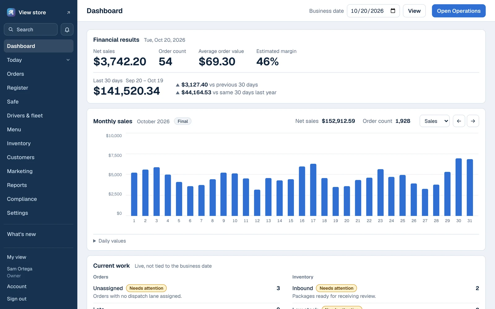
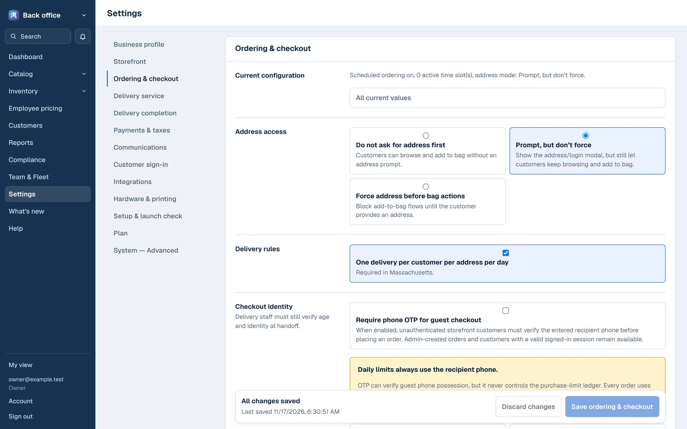

Magic Dragon on the web: storefront, dispatch and back office
Magic Dragon is delivery software for licensed cannabis stores in Massachusetts. Customers order on the website, dispatchers send those orders out with drivers, and owners run the rest of the business from the back office. I designed all of it from scratch, and it's in production today.
- Type
- Real product, in production
- Platform
- Customer website, dispatch board and back office, plus an Android driver app
- My role
- Founder and design lead. I did the research, flows, UI, copy and design system.
- Users
- Customers, dispatchers, drivers, store owners and managers

The problem
A single order involves a lot of people. The customer places it, a dispatcher assigns it, a driver delivers it, and the store owner has to have everything set up correctly before any of that can happen.
On top of that, Massachusetts has strict rules about who can buy, how much they can buy in a day, and what the driver has to check at the door. The software has to follow those rules without making every step feel like paperwork. It also has to work for more than one store, with each store's data kept separate.
Who uses it
Customers
They usually order on their phone and want to know when it'll arrive, what it'll cost, and what to have ready at the door.
Dispatchers
They decide which driver takes each order and what order the stops go in. They also take the calls when a customer asks where their order is.
Drivers
They carry several orders at a time, and at every stop they check ID, collect payment and get a signature.
Store owners and managers
They set up the store, manage staff and drivers, and keep the business compliant.
Ordering
My goal was to let people shop freely and only ask them for something when it's actually needed.
Shop first, address later
You can browse and add things to your bag without entering an address. We ask for it the first time you add something, and you can close the form and keep shopping. Stores that want the address up front can change this in the back office.


Product details in a pop-up
Clicking a product opens its details over the menu, so closing it takes you right back to where you were. It shows the brand, size and how many are left, and the price is on the Add to bag button. Each product still has its own link, so you can share it.

Showing the purchase limit early
Massachusetts limits how much one person can buy in a day. Rather than having someone run into that limit as an error at checkout, the bag shows how much of it their order uses.

Signing in with a text code
Customers don't need a password. They enter their phone number and we text them a code. The consent wording for those texts sits right under the button.

Dispatch
Once a customer places an order, it shows up on the dispatch board right away.
The dispatch board
New orders come in on the left, and each driver has a column. Dispatchers drag an order to a driver to assign it, and drag it up or down to change the order of stops. Every card shows when it's expected to arrive. If two dispatchers are working at once, they both see changes as they happen, and so does the driver.

Order details
Clicking an order opens it on top of the board. What dispatchers need most is at the top: the customer's phone number, the address and what's in the order. Payment, timing and history are in sections you can expand. Less common actions are in a menu, and Cancel order is set apart so nobody hits it by accident.

A screen for the TV
The wallboard is a read-only view meant for a TV in the dispatch room. It shows big counts of what needs attention, like unassigned orders and late deliveries. It leaves out customer and staff names, since anyone walking by can see it.

Back office
Store owners and managers handle everything else here: settings, staff, drivers, reports and compliance. There's a lot to set up, so most of my work went into making it easy to find your way around.
How the day is going
The Dashboard answers the owner's first question: how are we doing? The day's sales, orders, average order and margin are up top, then the last 30 days against the 30 before and the same days last year, then a bar for every day of the month. Below that is what needs someone right now, like orders with no driver and stock that's running low.

Settings grouped by task
Settings are grouped by task, like Ordering & checkout or Delivery service. Each option says what customers will see if you choose it, and anything the state requires is clearly marked.

Integrations
Outside services like texting, email, payments and marketplaces used to be on one long page. I split them into four tabs, with one row per service that shows whether it's set up.

Who can get in
Owners decide who has access and what each person can do. That includes us. If Magic Dragon support needs to look at a store's account, the owner has to approve it and choose our role, and the access expires on its own. The tools we use to set up stores never show a store's sales or customers.

How I work
- I mock up every significant change and look at it at real screen sizes before anything gets built.
- I keep written style guides for the website and the internal tools, so new screens match the ones already there.
- I use AI tools to run audits, draft mockups and build the designs I've approved. The decisions and the copy are mine.
- I regularly audit the website, sign-up and login, and inspection readiness, and turn what I find into small fixes.
- Changes go out in small releases outside store hours, so a problem a dispatcher runs into one day can be fixed before their next shift.
What's next
I'd like to measure two things: how many people who start shopping without an address still finish their order, and how long it takes a new store to get set up and take its first order.
If you're curious how the website and the dispatch board were built, the Development tab covers that. The iPhone app has its own case study.
These screens are from a test copy of the app with sample products, drivers and orders. Names, addresses and phone numbers are made up.